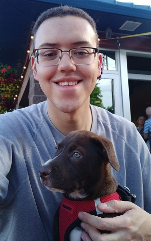

I am a Full Stack Web Developer based in Colorado with a natural passion for learning and
growth. My creative problem-solving prowess guides me to construct clean and organized
projects.

Legend of Zelda Quiz


Working in a financial background for 6 years I felt I was holding myself back from my
passion
of technology. At a young age, I had a strong interest in computers but never leaped
forward.
Gathering my courage up and changing my path to become a developer I began to push myself to
learn and improve every day as much as possible to find a career in technology. That doesn't
shy
me away from my hobbies. I've grown up playing video games from a young age and I have a
special
place in my heart for the series "Legend of Zelda". You'll find one of my projects is themed
as
such! My other hobby is cooking which I feel is similar to programming where you take a lot
of
parts and bring them together to create something amazing.